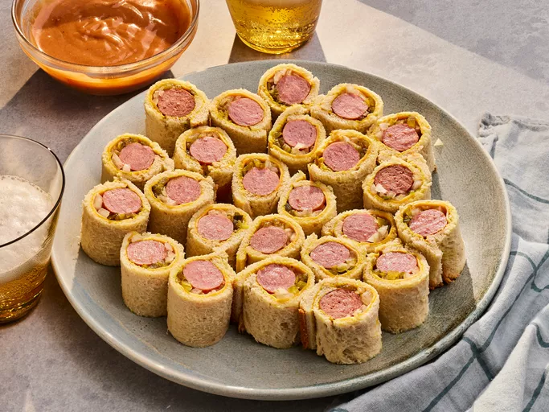

Hotdog Roll-Ups

Description
A quick and easy recipe to make classic hot dogs—but with a twist!
These hotdog roll-ups are bite-sized and delicious, making them the perfect lunch snack!
Ingredients
- 8 slices of white bread
- 2 tbsp yellow mustard
- 4 thin slices sharp Cheddar cheese, halved
- 8 beef hot dogs
- 4 tbsp minced yellow onion
- 2 tbsp plus 2 tsp sweet pickle relish
- 1/4 cup barbecue sauce
- 1/4 cup mayonnaise
- 1/2 tsp seasoned salt
Steps
- Gather all ingredients.
- Using a rolling pin, roll each bread slice until entirely flat. Trim just the crust off each bread slice, forming a 4x4-inch square. Spread each bread slice with an even layer of mustard (about 3/4 teaspoon per slice).
- Working with 1 slice of bread at a time, place a halved cheese slice on the edge of the bread closest to you; place 1 hot dog horizontally on top of the cheese slice. If needed, trim the ends of the hot dog so that no hot dog extends over edges of bread. Spoon 1 1/2 teaspoons onion horizontally across the cheese slice above the hot dog, followed by 1 teaspoon of relish.
- Roll up tightly, applying gentle pressure to help seal the bread seams together. Slice crosswise into 3 equal pieces (about 1 1/4-inches each), and transfer to a serving platter. Repeat process with remaining ingredients. Preheat an air fryer to 400 degrees F (200 degrees C) for 5 minutes, or according to manufacturer's instructions. Lightly coat tops and sides of roll-ups with cooking spray. Working in 2 batches, add roll-ups to basket, spacing them 1/2-inch apart, and cook until bread is lightly golden brown, about 5 minutes.
- Stir together barbecue sauce, mayonnaise, and seasoned salt in a small bowl until evenly combined.
- Serve hotdog roll-ups with mayonnaise mixture.
Home